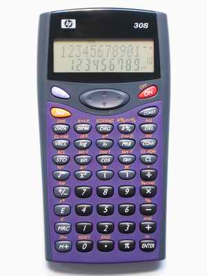

HP 30S簡介

HEWLETT PACKARD HP 30S是一部香港文憑試的准用計數機 之一，內置了一元二次方程及聯立二元一次方程的程式，這兩個功能都是中學很常用的功能，因此使用上亦很方便，操作方面與CITIZEN SRP-285II相當相似，基本上少了常態分佈概率函數、簡單複數及基數計算等功能。雖然功能上是較少，但亦足夠香港文憑試的使用，另外HP30S計數機的運算速度比285II快，較特別之處是加入了常量算式K，對於計算一些相似算式的問題時會較為方便。HP30S與285II一樣這部計數機內部使24位有效數字來運算，準確較fx-3650P及EL-506V為高，亦因為這個原因，經過較多計算後誤差依然很細，因此小數轉化分數的功能亦較好(較高機會能成功將小數轉換成分數)。程式方面(算式)只有一個程式位置，容量為80字，因此亦可以編寫一些簡單實用的程式。
1. HP 30S程式集
2. HP-30S自我檢測功能
5. HP 30S使用例題
8. 聯絡WebCal網主